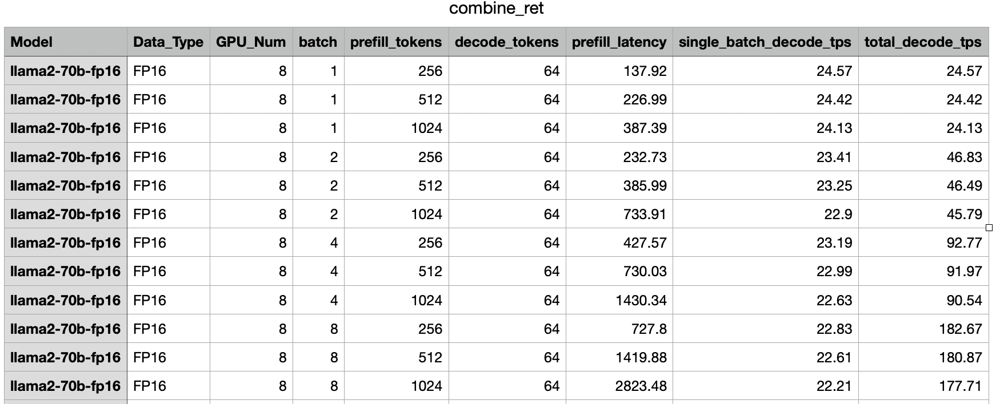

vLLM_MTTransformer#
MTTransformer为摩尔线程自研的LLM推理引擎，vLLM是一个快速且易于使用的LLM推理和服务库，本文档将介绍vLLM的MTTransformer适配版本使用方法。
0.环境依赖#
MT GPU Driver：kuae 1.2
mtbios：QY2 v3.4.3
code: Vllm (下文中容器中包含代码)
1.启动容器#
# 工区
docker run -it --privileged --net host --name=vllm_mtt_test -w /workspace -v /data/mtt/:/data/mtt/ --env MTHREADS_VISIBLE_DEVICES=all --shm-size=80g sh-harbor.mthreads.com/mt-ai/musa-pytorch-transformer-vllm:v0.1.4 /bin/bash
# 中联集群
docker run -it --privileged --net host --name=vllm_mtt_test -w /workspace -v /data/mtt/:/data/mtt/ --env MTHREADS_VISIBLE_DEVICES=all --shm-size=80g core.harbor.zlidc.mthreads.com:30003/mt-ai/musa-pytorch-transformer-vllm:v0.1.4 /bin/bash
关键参数解释
--name=vllm_mtt_test指定容器名称，不能和其他容器重名-w /workspace指定工作目录-v /data/mtt:/data/mtt/映射目录，前者为物理机目录，后者为容器内访问的目录，该目录可访问模型文件sh-harbor.mthreads.com/mt-ai/musa-pytorch-transformer-vllm:v0.1.4是镜像名称：tag
2.支持模型列表#
| 模型名称 | 验证过的模型 | 备注 |
|---|---|---|
| Llama2 | 7B, 13B, 70B | 全系列模型都支持 |
| Mistral | 7B | |
| Qwen | 7B, 14B, 72B | 全系列模型都支持 |
| Qwen1.5 | 32B, 72B, 110B | Qwen1.5和2同构，非MOE模型都支持 |
| Qwen2 | 1.5B | |
| ChatGLM2/3 | 6B | |
| Baichuan | 7B,13B | |
| Yayi2 | 30B | 由于原生的vllm不支持yayi，需要增加环境变量，执行 export VLLM_NO_USAGE_STATS=1 绕开某些vllm的bug |
3.vLLM参数配置#
关于vLLM部分的一些参数 配置可以参考官网相关文档Engine Arguments和Sampling Parameters，这里同时罗列一些vLLM_MTTransformer不支持的参数：
由于MTTansformer仅支持float16模式，所以目前不支持量化相关的参数
由于多卡环境是在MTTransformer内部处理的，所以目前ray相关的参数（分布式相关资源调度）不支持
rope相关参数（位置编码相关，用于优化计算和保持对输入序列中各个词的位置信息的理解），暂不支持
lora(一种fine tune技术)暂不支持
目前支持的参数：
model：需要指定经过
mttransformer.convert_weigh转换之后的权重目录。需要注意的如果是之前mtt版本转换过的权重，则不兼容当前版本，需要重新转换device：仅支持设置为musa
tensor-parallel-size： 必须和convert_weight的模型一致，如果是多卡推理，则该参数必须设置（vllm中申请kv cache需要这个信息）
dtype: 目前仅支持默认值auto或者float16
kv-cache-dtype：仅支持默认值auto
pipeline-parallel-size：仅支持默认值1
block-size：仅支持设置为64
max-num-seqs：建议设置为128以获取最佳性能
max_num_batched_tokens，max_model_len ：需要根据运行的序列长度进行配置
4.快速开始#
以llama2-7B模型为示例：
权重转换
python -m mttransformer.convert_weight \ --in_file /data/mtt/models/llama-2-7b-chat-hf-fp16/ \ --saved_dir /data/mtt/models_convert/llama-2-7b-chat-hf-fp16-tp1-convert/ \ --weight_data_type fp16 \ --model_type mistral \ --tensor-para-size 1 \ --arch mp_22
其中：
in_file是从huggingface上下载的模型pytorch格式权重文件saved_dir为MTTransformer转换之后的权重文件路径weight_data_type目前仅支持fp16。值得一提的是如果in_file的模型是fp32, fp16, bf16，都会被mtt转为fp16model_type目前支持llama, mistral, chatglm2, baichuan, qwen, qwen2, yayi；mistral和llama同构，model_type也可以填llama；chatglm2和chatglm3同构，model_type都是chatglm2；Qwen1.5和Qwen2同构，model_type都是qwen2，但是Qwen的依然是qwen；baichuan, baichuan2，model_type都是baichuanarch仅支持mp_22，也就是qy2--tensor-para-size,-tp张量并行数，可简单理解为参与运行的GPU数
为方便可以执行
convert_weight.sh脚本进行转换：# Usage: ./convert_weight.sh <original_model_path> <tp_size> ./convert_weight.sh /data/mtt/models/llama-2-7b-chat-hf-fp16/ 1
设置环境变量
# 以上文中启动的容器为例，将vllm_mtt代码路径设置为python环境变量 export PYTHONPATH=/home/workspace/vllm_mtt
运行普通示例程序
# generate_llama2-7b.py import vllm from vllm import LLM, SamplingParams # path为转换后的权重文件目录，可根据实际更改 path = "/data/mtt/models_convert/llama-2-7b-chat-hf-fp16-tp1-convert/" llm = LLM(model=path, gpu_memory_utilization = 0.9, tensor_parallel_size = 1, device = "musa", block_size = 64, max_num_seqs = 128, max_model_len = 2048, max_num_batched_tokens=2048) # Print the outputs. prompts = [ "[INST] Hello! [/INST]", "[INST] Hi! who are you? [/INST]", "[INST] I am going to Paris, where should I go? [/INST]", "[INST] What is your name? [/INST]", "[INST] Where are you coming from? [/INST]", ] sampling_params = SamplingParams(temperature=0, top_p=0.95, max_tokens=40) outputs = llm.generate(prompts, sampling_params) print(f"\n") for idx, output in enumerate(outputs): prompt = output.prompt generated_text = output.outputs[0].text print(f"Prompt {idx}: {prompt}, \nGenerated text: {generated_text}\n\n") `python generate_llama2-7b.py` 执行示例程序即可也可执行
generate_chat.py脚本# usage: generate_chat.py [-h] -ckpt CHECKPOINT_PATH -tp TENSOR_PARALLEL_SIZE python generate.py -ckpt /data/mtt/models_convert/llama-2-7b-chat-hf-fp16-tp2-convert/ -tp 2
运行流式输出示例程序
# async_chat_llama2-7b.py import asyncio import time from vllm import AsyncLLMEngine, AsyncEngineArgs, SamplingParams path = "/data/mtt/models_convert/llama-2-7b-chat-hf-fp16-convert" engine_args = AsyncEngineArgs(model=path, gpu_memory_utilization = 0.9, enforce_eager=True, disable_log_stats=True, enable_prefix_caching=True, device = "musa", block_size = 64, max_num_seqs = 128) # initialize engine and request arguments # engine_args = AsyncEngineArgs(model="facebook/opt-125m", enforce_eager=True) model = AsyncLLMEngine.from_engine_args(engine_args) sampling_param=SamplingParams(temperature=0.0, max_tokens=2048) def build_prompt(text): return f"[INST] {text} [/INST]" async def generate_streaming(): history_text="" while True: prompt = input(">>>") if prompt == 'stop': break prompt=build_prompt(prompt) history_text+=prompt # results_generator = model.generate(prompt, SamplingParams(temperature=0.0, max_tokens=1024), request_id=time.monotonic()) results_generator = model.generate(history_text, sampling_param, request_id=time.monotonic()) previous_text = "" print(f'Prompt:{prompt}\nGenerateText:\n') async for request_output in results_generator: text = request_output.outputs[0].text print(text[len(previous_text):], end='', flush=True) previous_text = text print("\n") # optional # previous_text = previous_text + model.engine.get_tokenizer().eos_token + "\n" history_text += previous_text print(f"!!!!!!!!!!!!!!!!!!!finish a dialog!!!!!!!!!!!!!!!!!!!!!!!\n{history_text}") # break asyncio.run(generate_streaming())
运行
python async_chat_llama2-7b.py即可为方便可以执行
streaming_chat.py# usage: streaming_chat.py [-h] -ckpt CHECKPOINT_PATH -tp TENSOR_PARALLEL_SIZE python streaming_chat -ckpt /data/mtt/models_convert/llama-2-7b-chat-hf-fp16-convert -tp 1
启动openai API Server服务
vLLM 支持通过提供与 OpenAI 类似的 API 接口，使用户能够无缝地切换或替代 OpenAI 的 API，使得开发者可以使用与调用 OpenAI API 几乎相同的方式，来调用部署在 vLLM 上的模型，简化了大模型推理的部署和使用。 若需要对外开放端口，请联系IT部门同事
python -m vllm.entrypoints.openai.api_server \ --model /data/mtt/models_convert/chatglm3-6b-fp16-tp1-convert \ --trust-remote-code \ --tensor-parallel-size 2 \ -pp 1 \ --block-size 64 \ --max-model-len 4096 \ --disable-log-stats \ --disable-log-requests \ --gpu-memory-utilization 0.95 \ --device "musa"
测试服务
# 可以在启动服务的同一容器下启动新终端进行测试 # 通过api调用模型 curl http://0.0.0.0:8000/v1/chat/completions -H "Content-Type: application/json" -d '{ "model": "/data/mtt/models_convert/chatglm3-6b-fp16-tp1-convert", "messages": [ {"role": "system", "content": "You are a helpful assistant."}, {"role": "user", "content": "Who won the world series in 2020?"} ] }'
期望输出
{"id":"cmpl-8062e4a30b1f452885f65d60a0d54591","object":"chat.completion","created":1724259639,"model":"/data/mtt/models_convert/chatglm3-6b-fp16-tp1-convert","choices":[{"index":0,"message":{"role":"assistant","content":" \n The Los Angeles Dodgers won the 2020 World Series."},"logprobs":null,"finish_reason":"stop","stop_reason":null}],"usage":{"prompt_tokens":32,"total_tokens":49,"completion_tokens":17}}
5.Benchmark#
这里的benchmark脚本参考vllm官方代码略作修改，具体相关的内容可以参考vllm官方文档。
前置准备#
在线测试数据集准备：
ShareGPT_V3_unfiltered_cleaned_split.json数据集是用户与 GPT 模型的对话数据。这类数据集往往被用于训练和微调对话模型，以提升模型的生成能力和对话质量
# 若无法下载数据集，可以登录网站手动下载
cd dataset
wget https://huggingface.co/datasets/anon8231489123/ShareGPT_Vicuna_unfiltered/resolve/main/ShareGPT_V3_unfiltered_cleaned_split.json
运行测试#
为方便测试，将测试命令写在了脚本中，相关参数可做参考。
这里都以chatglm2-6B为例：
离线测试
cd vllm-mtt_benchmark/benchmark_offline
./Chatglm2-6B.sh
# 脚本中实际执行的命令
export PYTHONPATH=/home/workspace/vllm_mtt
mkdir -p ./bench_results
python benchmark_thoughput.py \
--dataset ../dataset/train.jsonl \
--output-len 2048 \
--model /data/mtt/models_convert/chatglm2-6b-fp16-tp1-convert/ \
--max-model-len 4096 \
--gpu-memory-utilization 0.9 \
--save-result --result-dir bench_results/ \
--trust-remote-code \
--num-prompts 7000 \
--output-len 1024 \
--kv-cache-dtype "auto" \
--device "musa" \
-tp 1
在线测试
cd vllm-mtt_benchmark/benchmark_serving/Chatglm2-6B
./step1_server_start.sh
# 脚本实际执行命令
export PYTHONPATH=/home/workspace/vllm_mtt
# chatglm2支持设置参数 --max-model-len 4096，其他case仅为默认值2048
python -m vllm.entrypoints.openai.api_server \
--model /data/mtt/models_convert/chatglm2-6b-fp16-tp1-convert/ \
--trust-remote-code \
--tensor-parallel-size 1 \
-pp 1 \
--block-size 64 \
--max-model-len 4096 \
--disable-log-stats \
--disable-log-requests \
--gpu-memory-utilization 0.95 \
--device "musa"
# 可以在同一容器下另外启动一个终端
./step2_test.sh
# 脚本实际执行命令
export PYTHONPATH=/home/workspace/vllm_mtt
mkdir -p ./serving_result
python ../benchmark_serving.py \
--dataset-path ../../dataset/ShareGPT_V3_unfiltered_cleaned_split.json \
--model /data/mtt/models_convert/chatglm2-6b-fp16-tp1-convert/ \
--save-result \
--result-dir ./serving_result \
JSON结果转化CSV为方便查看，可以利用vllm-mtt_benchmark/result_convert.py脚本进行转换，用法如下：# 用法 # usage: result_convert.py [-h] [-i IN_PATH] -m {offline,serving} [-o OUTPUT_PATH] # 离线测试结果转换————示例 python result_convert.py -i ./benchmark_offline/bench_results -o ./offline_result.csv -m offline # 在线测试结果转换————示例 python result_convert.py -i ./benchmark_serving/serving_result -o ./serving_result.csv -m serving
6.mtt性能测试#
新建配置文件-示例#
创建配置文件 perf_config.json，注意实际测试可以删掉注释
[
{
"model_name": "llama2-70b", # 以实际模型名为准
"path": "/data/mtt/models_convert/llama-2-70b-hf-fp16-tp8-convert", # 对应模型路径
"batchs": [1,2,4,8], # 可自行调整
"prefill_token_lens": [256,512,1024], # 可自行调整
"decode_token_lens": [64] # 可自行调整
}
]
执行perf测试#
python -m mttransformer.perf_test perf_config.json
查验结果#
在执行路径下，测试结果保存 ./perf_data/combine_ret.csv文件，输出如下图所示（此图不代表最终结果）:

7.附录#
Benchmark离线结果解释#
Successful requests：读取prompts数据集总共处理成功的请求总数，代码中为num_requests，可在测试中指定大小latency：处理完所有requests所用的时间，单位为秒，在vllm源文件中此值为elapsed_time，且没有写单位（已和京东反馈，答复是不关注这个结果）Input Tokens: prompt数据集中输入的给模型的token总数Output tokens：输出tokens总数Req/s：每秒处理的请求数Output token throughput (tok/s)：吞吐量，等于输出tokens总数 / 总耗时（即elapsed_time=latency）
Benchmark在线结果解释#
Succesful request：总请求数，默认为1000Benchmark duration (s)：处理完所有请求所用的时间，单位是sTotal input tokens: 累计的输入tokens总数Total generated tokens: 生成的tokens总数Request throughput (req/s)：每秒处理请求数Input token throughput (tok/s)：输入token的吞吐量=Total input tokens / Benchmark durationOutput token throughput (tok/s):输出token吞吐量=Total generated tokens/Benchmark durationMean TTFT (ms): 该prompt数据集经过模型处理的平均首字时延，单位msMedian TTFT (ms): 该prompt数据集经过模型处理的首字时延中位数，单位msP99 TTFT (ms): 该prompt数据集经过模型处理的99%的请求的首字时延，单位ms（表示99%的请求的首字延迟在该时间内）Mean TPOT (ms):除去首字延时，每个token的平均处理时长Median TPOT (ms): 除去首字延时，每个token处理时长的中位数P99 TPOT (ms): 除去首字延时，99%的单token处理时长在该时间内处理完成